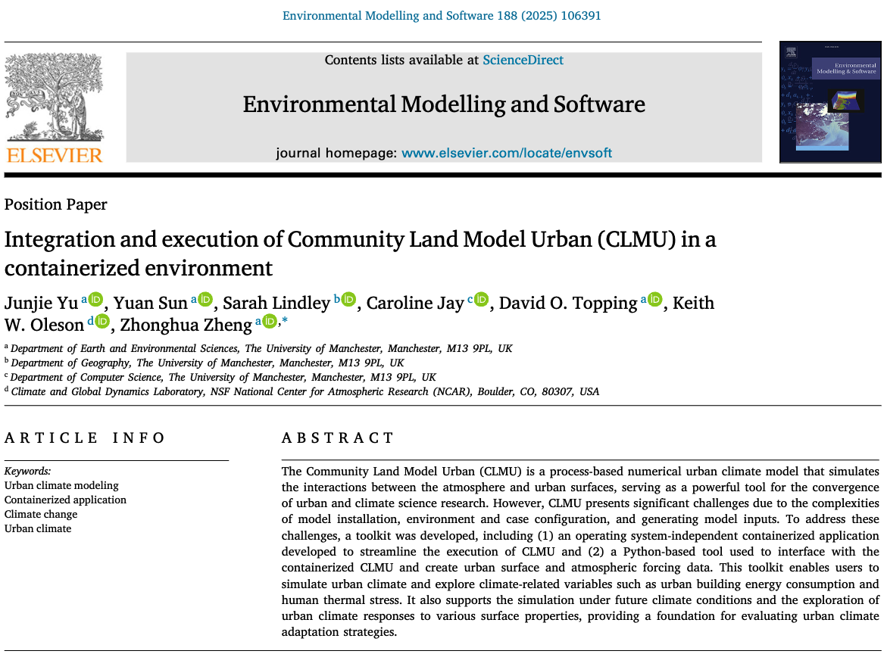

pyclmuapp: Integration and Execution of Community Land Model Urban (CLMU) in a Containerized Environment


pyclmuapp: Integration and Execution of Community Land Model Urban (CLMU) in a Containerized Environment
Contributors: Junjie Yu, Keith Oleson, Yuan Sun, David Topping, Zhonghua Zheng (zhonghua.zheng@manchester.ac.uk)
If you use pyclmuapp in your research, please cite the following paper:
Yu, J., Sun, Y., Lindley, S., Jay, C., Topping, D. O., Oleson, K. W., & Zheng, Z. (2025). Integration and execution of Community Land Model Urban (CLMU) in a containerized environment. Environmental Modelling & Software, 188, 106391. https://doi.org/10.1016/j.envsoft.2025.106391
{kind=link}
@article{YU2025pyclmuapp,
title = {Integration and execution of Community Land Model Urban (CLMU) in a containerized environment},
journal = {Environmental Modelling & Software},
volume = {188},
pages = {106391},
year = {2025},
issn = {1364-8152},
doi = {https://doi.org/10.1016/j.envsoft.2025.106391},
url = {https://www.sciencedirect.com/science/article/pii/S1364815225000751},
author = {Junjie Yu and Yuan Sun and Sarah Lindley and Caroline Jay and David O. Topping and Keith W. Oleson and Zhonghua Zheng},
}
Overview
Python: warmup
Python: examples
Other usage
Python: created input files
Spinup
Evaluation
API Reference